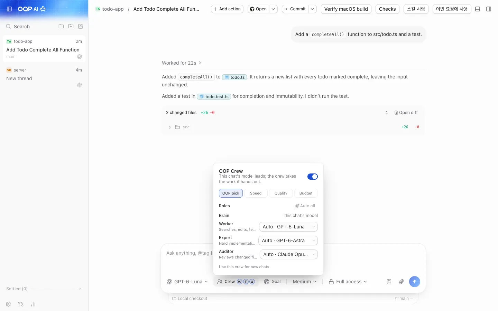
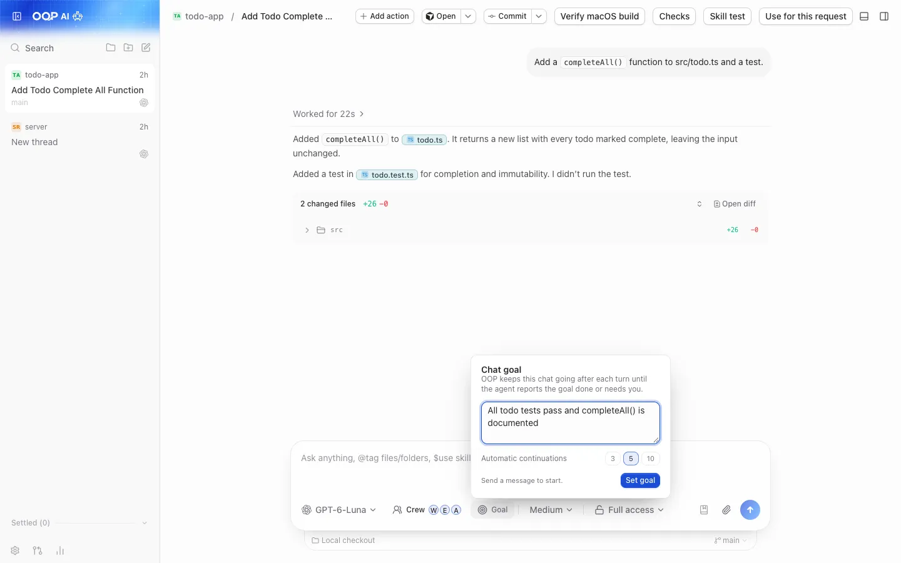
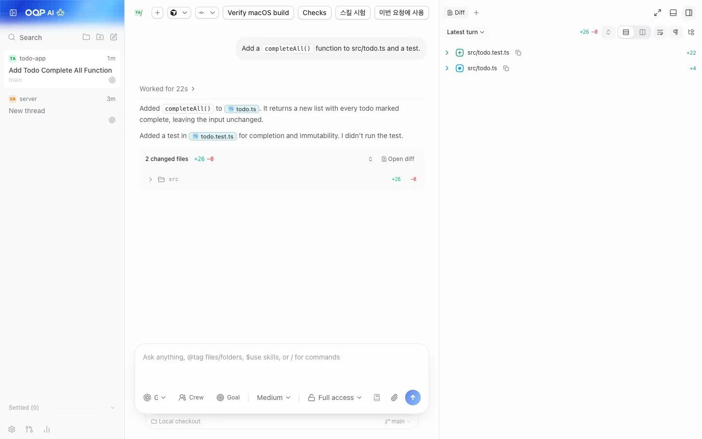
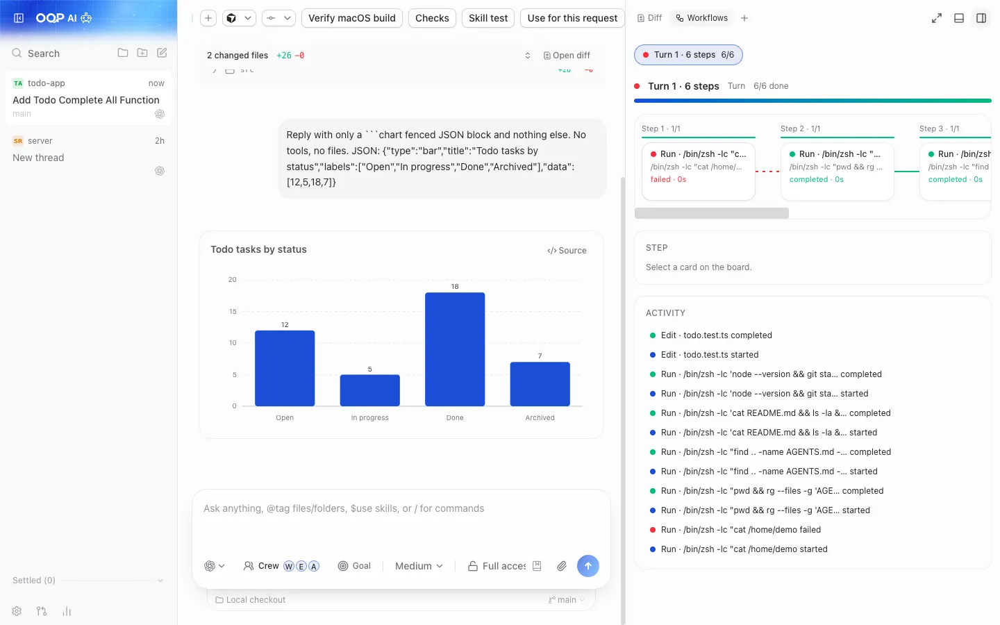
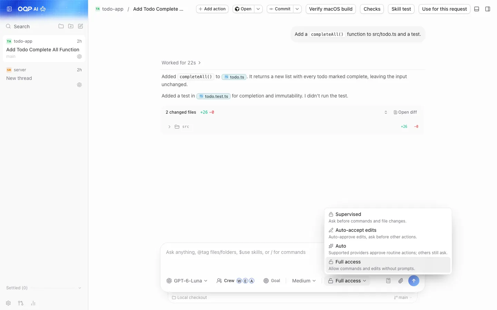
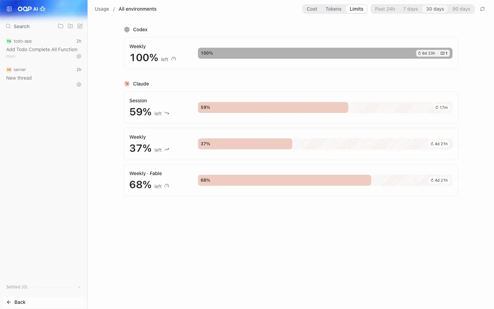
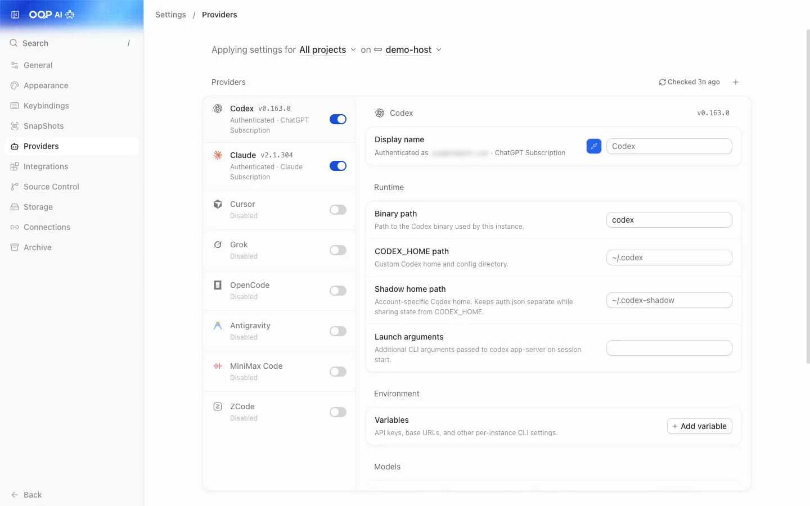
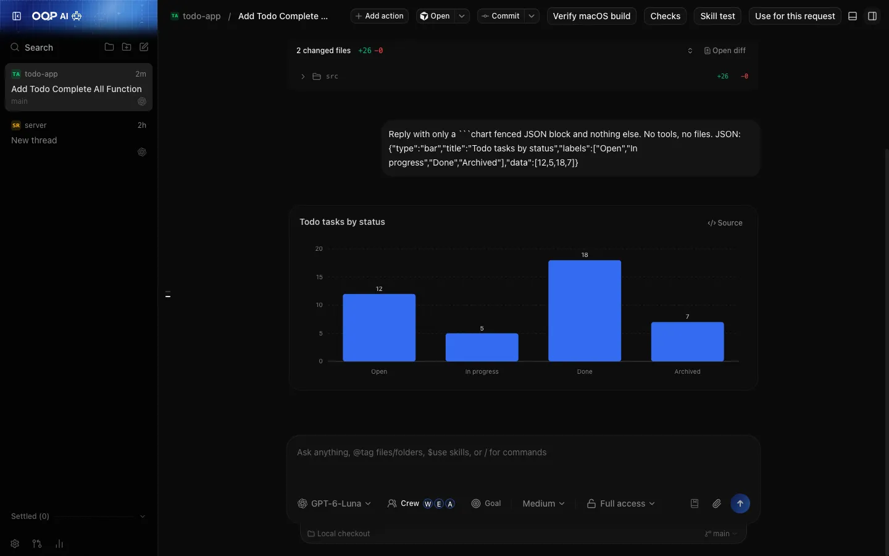
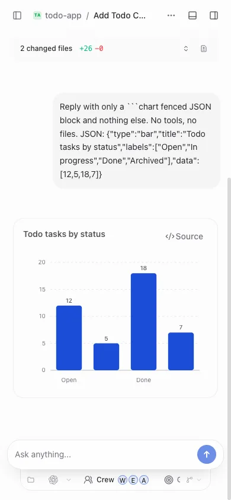

One desktop app for every coding agent.쓰던 코딩 에이전트를 하나의 앱에서.
OOP wraps the agent CLIs you already have, Codex, Claude Code, Cursor, OpenCode and
more, in one chat-style workspace on your own computer. Bring your own subscriptions.
Optionally let several models share a task as a Crew.OOP는 이미 쓰고 있는 Codex, Claude Code, Cursor, OpenCode 같은 에이전트 CLI를 내
컴퓨터의 채팅형 작업 공간 하나로 묶어 줍니다. 구독은 직접 준비하고, 원하면 여러 모델이
한 작업을 나눠 맡는 Crew도 쓸 수 있습니다.
4permission modes, from Supervised to Full access권한 모드: Supervised부터 Full access까지
3ways to use it: desktop app, browser, phone사용 방법: 데스크톱 앱, 브라우저, 휴대폰
0OOP accounts or OOP servers; your code stays on your machineOOP 계정·OOP 서버; 코드는 내 컴퓨터에만 남습니다
01 · What it is소개
Agents are good. Juggling them is not.에이전트는 훌륭합니다. 여러 개를 오가는 일이 문제죠.
Each coding agent lives in its own terminal or app, with its own login, history and
approval prompts. OOP puts them side by side with one diff, one terminal and one
approval flow.코딩 에이전트마다 터미널이나 앱, 로그인, 기록, 승인 프롬프트가 따로 있습니다. OOP는
이들을 나란히 놓고 diff, 터미널, 승인 흐름을 하나로 맞춥니다.
You bring내가 준비Agent CLIs에이전트 CLI
+
You bring내가 준비Subscriptions & keys구독과 API 키
+
OOP
Desktop · browser · phone데스크톱 · 브라우저 · 휴대폰
=
You get결과One workspace하나의 작업 공간
Not a hosted service. OOP runs on your computer. Projects, provider
logins and agent work stay there. There is no OOP account and no OOP server.호스팅 서비스가 아닙니다. OOP는 내 컴퓨터에서 실행됩니다. 프로젝트,
provider 로그인, 에이전트 작업이 모두 그곳에 남고, OOP 계정도 OOP 서버도
없습니다.
Built on T3 Code. OOP is a fork of
T3 Code by T3 Tools Inc. (MIT),
based on upstream v0.0.44. Almost all of the foundation is their work.T3 Code 기반입니다. OOP는 T3 Tools Inc.의
T3 Code(MIT)를 포크한 프로젝트이며
업스트림 v0.0.44를 기반으로 합니다. 기반 코드의 거의 전부가 T3 Code 팀의
작업물입니다.
02 · Key features주요 기능
Control, review and keep an eye on the work.제어하고, 검토하고, 작업을 지켜봅니다.
F1ProvidersProvider
Eight agents, one thread view여덟 가지 에이전트, 하나의 스레드 화면
Switch the provider and model per thread. Install, update and sign in to each CLI
from one page.스레드마다 provider와 모델을 바꿔 쓰고, 각 CLI의 설치·업데이트·로그인을 한
페이지에서 처리합니다.
Settings → Providers
F2Crew
Several models, one chat한 채팅, 여러 모델
A brain model plans and talks to you, workers and an expert do the work, and an
auditor reviews the result.총괄 brain 모델이 계획하고 대화하며, worker와 expert가 작업하고, auditor가 결과를
검토합니다.
Composer → Crew
F3Autonomy자율 실행
Thread goals스레드 목표
Describe what should be true when the chat is done. OOP keeps the thread going
until the goal is complete, blocked or stopped.채팅이 끝났을 때 참이어야 할 조건을 적어 두면, 목표가 완료·차단·중지될 때까지
스레드를 이어 갑니다.
Composer → Goal
F4Review검토
Diff panel with checkpoints체크포인트가 있는 diff 패널
Review what the agent changed and restore from a checkpoint if you do not like
it.에이전트가 바꾼 내용을 검토하고, 마음에 들지 않으면 체크포인트에서
복원합니다.
Right panel → Diff
F5Safety안전
Four permission modes네 가지 권한 모드
Supervised, Auto-accept edits, Auto or Full access, per thread. New threads default
to Full access; use Supervised for repos you do not trust.스레드마다 Supervised, Auto-accept edits, Auto, Full access 중에서 고릅니다. 새
스레드의 기본값은 Full access이니 믿기 어려운 저장소에는 Supervised를 쓰세요.
Composer · Settings → General
F6Remote원격
Steer from your phone휴대폰으로 지켜보고 조정
Pair a phone over your Wi-Fi, Tailscale, or a Cloudflare relay you deploy yourself.
The agents keep running on your computer.같은 Wi-Fi, Tailscale, 또는 직접 배포한 Cloudflare relay로 휴대폰을 페어링합니다.
에이전트는 계속 내 컴퓨터에서 실행됩니다.
Sidebar → Connect mobile
F7Cost비용
Usage page사용량 페이지
Token use, cache savings and estimated cost across providers. Estimates, not your
bill.provider 전체의 토큰 사용량, 캐시 절감, 추정 비용을 보여 줍니다. 실제 청구액이 아닌
추정치입니다.
Sidebar · mod+u
F8Visibility가시성
Workflows and agents워크플로와 에이전트
A live diagram of tool calls and subagents while the agent works.에이전트가 작업하는 동안 도구 호출과 서브에이전트를 실시간 다이어그램으로 보여
줍니다.
Right panel · mod+alt+w
03 · OOP Crew
Cheap models for the bulk. A strong one to check.대부분은 저렴한 모델로. 검토는 강한 모델로.
Turn on Crew next to the model picker. The chat's own model becomes the brain, and
OOP routes the rest by role.모델 선택기 옆에서 Crew를 켜면, 채팅의 모델이 brain이 되고 나머지는 역할에 따라
나뉩니다.
AuditorReviews turns that changed files.파일을 바꾼 턴을 검토합니다.
Presets: OOP pick, Speed, Quality, Budget, with a
per-role model override.프리셋: OOP pick, Speed, Quality, Budget. 역할별로 모델을
직접 지정할 수도 있습니다.
If a crew model fails, for example it ran out of credit, OOP hands the task to
another signed-in model of the same level.crew 모델이 크레딧 소진 등으로 실패하면, 같은 수준의 다른 로그인된 모델에 작업을
넘깁니다.
Small, test-passing changes of 20 lines or fewer are not audited.테스트를 통과한 20줄 이하의 작은 변경은 감사하지 않습니다.
Crew runs several models per chat, so it multiplies usage. Check the Usage
page.Crew는 채팅 하나에서 여러 모델을 돌리므로 사용량이 늘어납니다. 사용량 페이지를
확인하세요.
04 · Screens화면
See it before you install it.설치하기 전에 먼저 둘러보세요.
All screenshots come from an isolated demo profile with no personal data.모든 스크린샷은 개인 정보가 없는 격리된 데모 프로필에서 찍었습니다.
Pick a provider and model, set the permission mode, and follow the thread.provider와 모델을 고르고, 권한 모드를 설정한 뒤, 스레드를 따라가 보세요.

OOP Crew: one chat, several models, with a live board of who is doing what.OOP Crew: 한 채팅에서 여러 모델이 일하고, 누가 무엇을 하는지 실시간 보드로
확인합니다.

Thread goal: the chat keeps going until the goal is done, blocked or stopped.스레드 목표: 목표가 완료·차단·중지될 때까지 채팅이 계속됩니다.

Diff panel: review the agent's changes and restore from a checkpoint.diff 패널: 에이전트의 변경을 검토하고 체크포인트에서 복원합니다.

Workflows: a live diagram of tool calls and subagents.워크플로: 도구 호출과 서브에이전트의 실시간 다이어그램.

Permission modes: from Supervised to Full access.권한 모드: Supervised부터 Full access까지.

Usage: token and estimated cost history per provider.사용량: provider별 토큰과 추정 비용 기록.

Settings → Providers: install, update and sign in to each provider.설정 → Providers: 각 provider를 설치, 업데이트하고 로그인합니다.

The dark theme.다크 테마.

The web client at phone size, paired to a desktop host.데스크톱 호스트에 페어링한 휴대폰 크기의 웹 클라이언트.
05 · Install설치
One command. Checked before it installs.명령 한 줄. 설치 전에 검증합니다.
The installer downloads the desktop app from a GitHub release and verifies its
SHA-256 before installing. It needs no Node.js, pnpm, git or compiler.설치 스크립트는 GitHub 릴리스에서 데스크톱 앱을 내려받아 설치 전에 SHA-256을
검증합니다. Node.js, pnpm, git, 컴파일러가 필요 없습니다.
macOS · Apple Silicontested검증됨
curl -fsSL https://raw.githubusercontent.com/AIBeginnerX/oh-our-pi-desktop/main/scripts/install-desktop.sh | sh
Installs ~/Applications/OOP.app (an existing
/Applications/OOP.app is updated in place). Remove the app to
uninstall. The app is not notarized: if macOS warns, right-click it and choose
Open, or use System Settings → Privacy & Security →
Open Anyway.~/Applications/OOP.app에 설치합니다(기존
/Applications/OOP.app이 있으면 그 앱을 갱신). 삭제하려면 앱을 지우면
됩니다. 앱은 공증(notarize)되지 않았으므로 macOS가 경고하면 앱을 우클릭해
열기를 고르거나, 시스템 설정 → 개인정보 보호 및 보안 → 그래도 열기를
쓰세요.
Run in PowerShell. Silent per-user install with a Start menu entry; uninstall from
Settings → Apps. Windows SmartScreen may warn: click More info →
Run anyway. The Windows installer was built by the maintainer and is not yet
verified on clean machines.PowerShell에서 실행하세요. 사용자 단위 무음 설치이며 시작 메뉴에 등록됩니다. 삭제는
설정 → 앱에서 합니다. SmartScreen이 경고하면 추가 정보 → 실행을
누르세요. Windows 설치 파일은 개발자가 빌드했으며 깨끗한 환경에서는 아직 검증되지
않았습니다.
Linux · x64not verified미검증
curl -fsSL https://raw.githubusercontent.com/AIBeginnerX/oh-our-pi-desktop/main/scripts/install-desktop.sh | sh
Installs an AppImage under ~/.local/share/oop-desktop, a launcher at
~/.local/bin/oop-desktop and a menu entry. It needs GTK and NSS runtime
libraries. The Linux GUI has not been verified.AppImage를 ~/.local/share/oop-desktop에, 실행 파일을
~/.local/bin/oop-desktop에, 메뉴 항목을 함께 설치합니다. GTK와 NSS
런타임 라이브러리가 필요하며, Linux GUI는 아직 검증되지 않았습니다.
Build it yourself (macOS Apple Silicon)직접 빌드 (macOS Apple Silicon)Node 24.x · pnpm 11.10.0 · gitNode 24.x · pnpm 11.10.0 · git
git clone https://github.com/AIBeginnerX/oh-our-pi-desktop.git
cd oh-our-pi-desktop
node scripts/macos.mjs doctor
node scripts/macos.mjs setup
node scripts/macos.mjs package
Run the script with node, not through pnpm.
package writes an ad hoc signed DMG to release/macos/.
Windows and generic dev paths are in the
README.스크립트는 pnpm이 아니라 node로 직접 실행하세요.
package는 ad hoc 서명된 DMG를 release/macos/에 만듭니다.
Windows와 일반 개발 경로는
README를 참고하세요.
To update later, quit OOP and rerun the same command; your data is kept. See
Releases and the
install guide.나중에 업데이트하려면 OOP를 종료하고 같은 명령을 다시 실행하면 되며 데이터는
유지됩니다.
Releases와
설치 안내를 참고하세요.
After installing설치한 뒤에
Install and sign in to one provider CLI (the desktop installer does not do
this for you). Settings → Providers shows the state.provider CLI 하나를 설치하고 로그인하세요(데스크톱 설치 스크립트가 대신해
주지 않습니다). 상태는 설정 → Providers에서 볼 수 있습니다.
Add a project folder, ideally a git repository, and start a thread.프로젝트 폴더(가능하면 git 저장소)를 추가하고 스레드를 시작합니다.
Pick a model and a permission mode in the composer, then send a message.작성창에서 모델과 권한 모드를 고르고 메시지를 보냅니다.
Review the result in the diff panel.diff 패널에서 결과를 검토합니다.
Codexcodex login
Claude Codeclaude auth login
Cursoragent login
Grok Buildgrok login
OpenCodeopencode auth login
Read the code. Report what breaks.코드를 읽어 보세요. 문제는 이슈로 알려 주세요.
OOP is MIT licensed and developed in the open. Issues are welcome; please never
include secrets, pairing links or personal paths.OOP는 MIT 라이선스로 공개되어 있습니다. 이슈는 언제든 환영하지만, 비밀 값, 페어링
링크, 개인 경로는 절대 올리지 마세요.
Early, local, and clear about it.초기 단계, 로컬 실행, 그리고 솔직하게.
Platform support플랫폼 지원
Platform플랫폼
Status상태
macOS · Apple Silicon
tested검증됨The main target.주요 대상입니다.
Windows · x64
experimental실험적Built by the maintainer; not verified on clean machines.개발자가 빌드했으며 깨끗한 환경에서는 검증되지 않았습니다.
macOS · Intel, Linux
untested미검증No promises.보장하지 않습니다.
Phone browser휴대폰 브라우저
checked확인됨Web UI checked at phone size. The native iOS and Android apps are untested by
this fork.웹 UI를 휴대폰 크기에서 확인했습니다. iOS·Android 네이티브 앱은 이 포크에서
검증하지 않았습니다.
Who is OOP for?누구를 위한 앱인가요?
Developers who already pay for one or more coding-agent subscriptions or API plans,
can accept an early, unsigned desktop app, and want one control surface. If you want
a polished, signed, auto-updating product, the upstream T3 Code is the better fit
today.이미 코딩 에이전트 구독이나 API 요금제를 쓰고 있고, 초기 단계의 서명되지 않은
데스크톱 앱을 감수할 수 있으며, 하나의 제어 화면을 원하는 개발자를 위한 앱입니다.
서명되고 자동 업데이트되는 완성형 제품을 원하신다면 현재로서는 업스트림 T3 Code가 더
잘 맞습니다.
What does it cost?비용은 얼마인가요?
OOP itself is free and MIT licensed. Every provider uses your own subscription or
API credit, and Crew multiplies usage by running several models per chat. The Usage
page shows estimates, not your bill.OOP 자체는 무료이며 MIT 라이선스입니다. 모든 provider는 내 구독이나 API 크레딧을
쓰고, Crew는 채팅 하나에서 여러 모델을 돌리므로 사용량이 늘어납니다. 사용량 페이지는
청구액이 아닌 추정치를 보여 줍니다.
Is it safe to let agents run?에이전트를 실행해도 안전한가요?
Agents run with your account's permissions and can edit files and run commands. New
threads default to Full access. For untrusted repositories, switch to Supervised
(Settings → General → New threads). Treat pairing links as passwords and prefer
Tailscale away from home.에이전트는 내 계정의 권한으로 실행되어 파일을 수정하고 명령을 실행할 수 있습니다.
새 스레드의 기본값은 Full access이므로, 믿을 수 없는 저장소에서는 Supervised로
바꾸세요(설정 → General → New threads). 페어링 링크는 비밀번호처럼 다루고, 집
밖에서는 Tailscale을 권장합니다.
Does OOP collect telemetry?텔레메트리를 수집하나요?
OOP has no servers and the maintainers receive nothing from your app. The anonymous
usage reporter inherited from upstream is off by default and needs your own project
key to turn on.OOP에는 서버가 없고 개발자는 앱에서 아무것도 받지 않습니다. 업스트림에서 물려받은
익명 사용 통계 보고기는 기본으로 꺼져 있고, 켜려면 직접 발급한 프로젝트 키가
필요합니다.